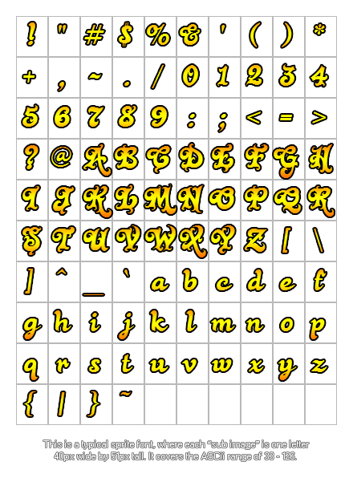

font_replace_sprite(ind, spr, first, prop, sep);
| Argument | Description |
|---|---|
| ind | The index of the font that shall be replaced (ie all references to this resource past this function will refer to the new font, not the original). |
| spr | The sprite to add a font based on. |
| first | The index of the first available character. |
| prop | Whether white space around each letter should be removed (if false, the created font will be monospace, otherwise it'll be like most regular fonts). |
| sep | The space between each letter, 0 meaning the right of one letter just touches the left of the next one. |
Returns : N/A
With this function you can use a "sprite strip" to replace a previously created sprite font asset, where each sub-image would be an individual symbol or letter. The index is the UTF8 map number for the first
character to use and the ranges to use are the same as you would for a normal font, starting with "!" but remember that you should only include what you need and that you should be using the
ord function to get the correct UTF8 value for the starting letter.
You can also set the spacing for the font to be proportional (true) or not (false), where a proprtional font is spaced based on the actual width of the letters (so the letter "i" takes less
room than the letter "w", for example) while a non-proprtional font will be spaced based on the sub-image width, like a monospace font. Finally, you can define the space to leave between each letter when
writing, and this can be any integer value, with 0 being no space (the letters will "touch" if proprtional).
It is also worth noting that there cannot be any spaces in the chracter map, so that if you, for example, use '.' and '0' but not '/', you need to either include '/' anyway or leave a blank sub-image
between the two used characters. The image below shows a typical sprite font layout:

For further details of the character map to use when making sprite fonts, please see the page on Font Tables.
NOTE : This functionality is limited to the Standard Version of GameMaker:Studio and above.
font_replace_sprite(global.Font, working_directory + "\Sprites\spr_Font.png", ord("!"), true, 2);
The above code will replace the font asset indexed in the global variable "Font" with a new font asset from an external image file.